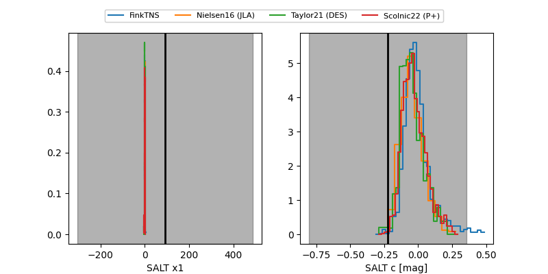

FINK: ZTF25abrdujr
Lasair: ZTF25abrdujr
ALeRCE: ZTF25abrdujr
ZTF25abrdujr (ztf,fink)
equatorial (ra, dec) = (288.2397,-20.65102)
galactic (l, b) = (16.5502,-13.82175)

last ztfg=19.41, ztfr=19.42
2 ztfg, 1 ztfr detections